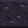

Obsidian
Obsidian is a block you can place. Needs a Gold pickaxe (tier 3) or better to mine.
How to get it
- Craft:

Obsidian stone ×2 → Obsidian at Furnace
Obsidian at Furnace - Dropped by the Magma skeleton: 1–2 (40% chance)
- Dropped by the Magma salamander: 1–2 (30% chance)
- Dropped by the Obsidian beetle: 2–4 (80% chance)
- Dropped by the ember_drake: 1–2 (30% chance)
- Dropped by the obsidian_wyrmling: 1–2 (50% chance)
- Dropped by the Lava serpent: 1–2 (40% chance)
 Magma fountain
Magma fountain Magma rock
Magma rock Adamantite bar
Adamantite bar Obsidian fountain
Obsidian fountain Gold bar
Gold bar Amethyst
Amethyst Dragon statue
Dragon statue Ruby
Ruby Obsidian bucket
Obsidian bucket Iron bar
Iron bar Small obsidian fountain
Small obsidian fountain Small rune well
Small rune well Silver bar
Silver bar Rune well
Rune well Large rune well
Large rune well Small magma fountain
Small magma fountain Large magma fountain
Large magma fountain Obsidian brick
Obsidian brick Ember ward rune
Ember ward rune